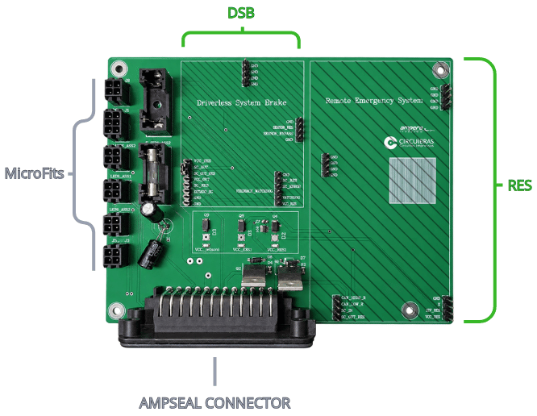
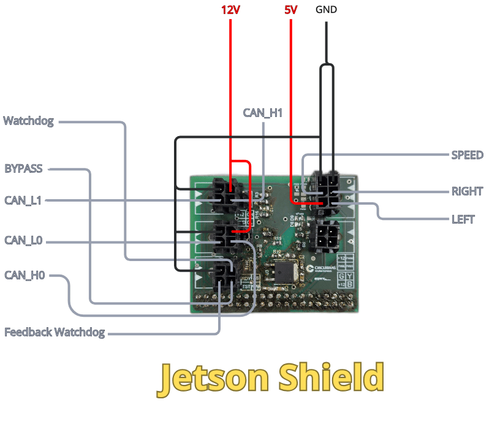

Hardware integration
The purpose of the Hardware Integration is to ensure that the subsystems operate together in an efficient and safe manner. This integration enables power distribution to the circuits, information exchange, device control, and proper operation of the overall system, improving its performance, reliability, and maintainability.
Description
The RES and DSB circuit boards are connected to the “Placão” (Hardware Integration) through dedicated headers and pins. The Hardware Integration board connects to the vehicle’s main wiring harness through a 35-pin AMPSEAL connector. This connection enables data exchange with the subsystems, provides power to the circuits, and interfaces with the Shutdown Circuit.
Additionally, a set of Micro-Fit connectors provides power to the computing unit, interfaces the CAN_0 and CAN_1 buses with the computing unit, transmits the Watchdog signal, controls the H-Bridge 1, and drives the status indicator LEDs.

RES
Inputs
- VCC_RES
- 12V_EBS
- GND
- SC_IN
- CAN_HIGH and CAN_LOW
Outputs
- CAN_HIGH and CAN_LOW
- SC_OUT_RES
DSB
Inputs
- 12V_ASMS_PROT
- RST_EBS
- SC_OUT_RES (Shutdown Circuit)
- Watchdog
- GND
Outputs
- SC_OUT
- EBS_OUT
- EBS_ERROR
- ESTADO_SC
General Pinout
Inputs
- 12V_IN (AMPSEAL)
- 12V_AT_IN (AMPSEAL)
- 12V_ASMS (AMPSEAL)
- GND (AMPSEAL)
- LEDS_ASSI: YELLOW, BLUE and GREEN (AMPSEAL)
- Reserve: EXTRA_1, EXTRA_2, EXTRA_3, EXTRA_JETSON1, EXTRA_JETSON2 and EXTRA_RES1 (AMPSEAL)
Outputs
- Computing unit: VCC_Jetson and GND; CAN_HIGH, CAN_LOW, GND, 12V_ASMS_PROT
- H-Bridge: B+ and GND
- LEDS_ASSI: GREEN, BLUE, YELLOW and 12V_ASMS_PROT
- Watchdog: JETSON_BYPASS, Watchdog, JETSON_EBS and FEEDBACK_WATCHDOG
Jetson Shield
The Jetson shield is designed to serve as an interface between our computing unit and the vehicle’s CAN bus. The CAN signals are received by a CAN transceiver on the board, which converts the electrical signals between the CAN bus and the computing unit’s interface, enabling communication with the vehicle’s systems.

Inputs
The communication architecture of the AMP prototype utilizes two CAN buses (CAN_0 and CAN_1), each assigned to specific functions:
CAN_0: This bus is used to transmit various data acquired from the vehicle’s sensors, such as IMU and steering measurements. All sensor-acquired data is transmitted via the CAN bus.
CAN_1: This bus is used for communication with the vehicle’s inverter ECU. It is reserved for the exchange of information essential to the vehicle’s operation and for communication with the ECU.
Watchdog Feedback: This is a 3V3 voltage signal used by the Jetson to monitor whether the EBS watchdog system is operating correctly.
Outputs
The Left and Right signals control the direction of motor rotation. These are binary control signals, with each signal indicating the direction in which the motor is commanded to rotate.
The BYPASS signal is an auxiliary signal used during the system’s initial check. It allows the initial verification procedure to be performed while the watchdog signal is inactive and reserved for its regular monitoring routine.
The Watchdog signal is a periodic signal transmitted to verify that the system is operating correctly. If the expected Watchdog signal is not detected within the specified time interval, the system interprets this condition as a fault.